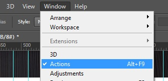
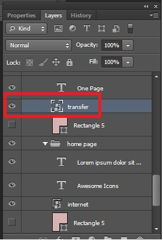
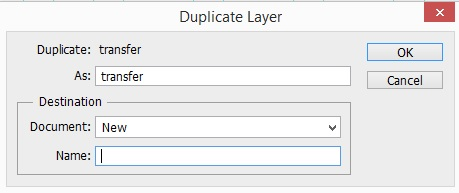
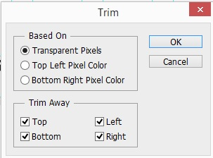
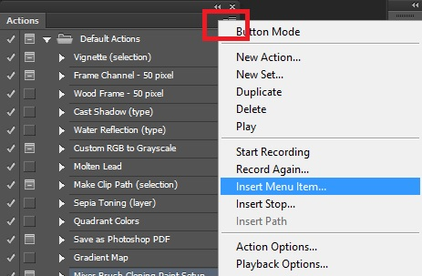
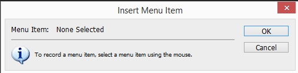

Для начала откроем окно с действиями (Window - Actions)
Теперь надо выбрать слой с самой иконкой. Для этого зажимаем клавиши Alt+Ctrl и ПКМ по иконке. Справа в окне "Слои" (Layers) выделится слой с иконкой:
Для того что бы убедиться что это та сама иконка можем нажать на "глаз" что напротив иконки. Если иконка пропадет то мы на месте
Теперь надо начать запись нашего действия (Action). Для этого во вкладке Action (в нижней части окна) кликаем по кнопке "Create new action". Откроется окно где нам надо указать имя нашего действия (например Save for Web) и так же выбрать горячую клавишу которая будет вызывать наше действие (например f2). После нажимаем кнопку Record. С этого момента начнется запись наших действий.
Возвращаемся к нашей иконке и жмем по ней ПКМ, и выбираем пункт "Duplicate layer". В открывшемся окне в разделе Document выбираем new и жмем ОК
Откроется наша иконка в отдельном окне. Теперь надо удалить все прозрачные пиксели. Для этого идем в меню Image - Trim. В открывшемся окне просто жмем ОК
Теперь возвращаемся к окне Actions, вызываем меню и выбираем пункт Insert Menu Item
Откроется окно
Его не трогаем, а сразу идем по меню file - Save for Web, только после этого жмем ОК в окне от actions.
Закрываем новый документ не сохраняя и жмем в окне actions кнопку внизу формы "stop playing/recording", после чего вкладку Actions можно вообще закрыть.
Теперь для сохранения иконок, мы выделяем нужный слой с иконкой в макета (зажимаем Alt+Ctrl и ПКМ по иконке в макете) и просто жмем f2. Иконка импортируется в Web окно, мы жмем save и указываем место куда надо сохранить иконку.
В меню выбираем Type - Panels - Character Panel
Теперь в правой панели отобразится новая кнопка вызова панели Character
Для определения шрифта в слое встаем на текст и в окне Character смотрим название шрифта.